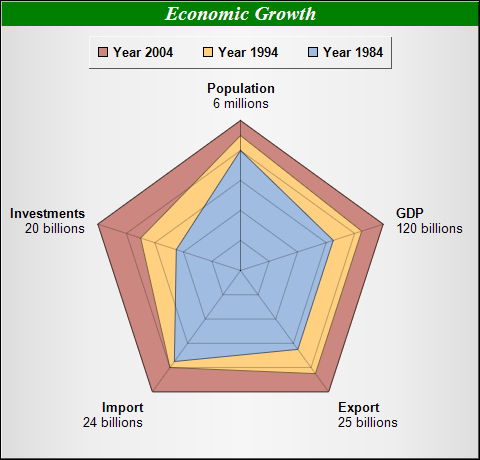

This example demonstrates a stacked radar chart.
This example is similar to the previous Multi-Radar Chart example, except the data are stacked before passing to ChartDirector.
ChartDirector 7.1 (C++ Edition)
Stacked Radar Chart

Source Code Listing
#include "chartdir.h"
int main(int argc, char *argv[])
{
// The data for the chart
double data0[] = {100, 100, 100, 100, 100};
const int data0_size = (int)(sizeof(data0)/sizeof(*data0));
double data1[] = {90, 85, 85, 80, 70};
const int data1_size = (int)(sizeof(data1)/sizeof(*data1));
double data2[] = {80, 65, 65, 75, 45};
const int data2_size = (int)(sizeof(data2)/sizeof(*data2));
// The labels for the chart
const char* labels[] = {"Population<*br*><*font=Arial*>6 millions",
"GDP<*br*><*font=Arial*>120 billions", "Export<*br*><*font=Arial*>25 billions",
"Import<*br*><*font=Arial*>24 billions", "Investments<*br*><*font=Arial*>20 billions"};
const int labels_size = (int)(sizeof(labels)/sizeof(*labels));
// Create a PolarChart object of size 480 x 460 pixels. Set background color to silver, with 1
// pixel 3D border effect
PolarChart* c = new PolarChart(480, 460, Chart::silverColor(), 0x000000, 1);
// Add a title to the chart using 15pt Times Bold Italic font. The title text is white (ffffff)
// on a deep green (008000) background
c->addTitle("Economic Growth", "Times New Roman Bold Italic", 15, 0xffffff)->setBackground(
0x008000);
// Set plot area center at (240, 270), with 150 pixels radius
c->setPlotArea(240, 270, 150);
// Use 1 pixel width semi-transparent black (c0000000) lines as grid lines
c->setGridColor(0xc0000000, 1, 0xc0000000, 1);
// Add a legend box at top-center of plot area (240, 35) using horizontal layout. Use 10pt Arial
// Bold font, with silver background and 1 pixel 3D border effect.
LegendBox* b = c->addLegend(240, 35, false, "Arial Bold", 10);
b->setAlignment(Chart::TopCenter);
b->setBackground(Chart::silverColor(), Chart::Transparent, 1);
// Add area layers of different colors to represent the data
c->addAreaLayer(DoubleArray(data0, data0_size), 0xcc8880, "Year 2004");
c->addAreaLayer(DoubleArray(data1, data1_size), 0xffd080, "Year 1994");
c->addAreaLayer(DoubleArray(data2, data2_size), 0xa0bce0, "Year 1984");
// Set the labels to the angular axis as spokes.
c->angularAxis()->setLabels(StringArray(labels, labels_size));
// Set radial axis from 0 - 100 with a tick every 20 units
c->radialAxis()->setLinearScale(0, 100, 20);
// Just show the radial axis as a grid line. Hide the axis labels by setting the label color to
// Transparent
c->radialAxis()->setColors(0xc0000000, Chart::Transparent);
// Output the chart
c->makeChart("stackradar.png");
//free up resources
delete c;
return 0;
}